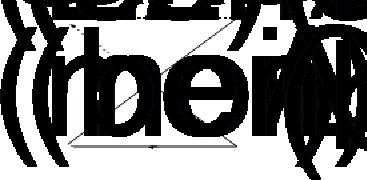

Geri veriliyordur bana
Düşlerimin o karmaşık mimarisi
Edip Cansever
(Yengeç, Kirli Ağustos)
Lacan nelere bulaşmıştır? Bunlardan hangisinden başlamalı? Başlangıç için bir yöntem var mıdır?
Bergama'ya yolunuz düşerse, orada sadece Tanrıça Demeter'le, Tanrılar Tanrısı Zeus'la değil –birçok başka yerlerde de bulunabilir bunlar– aynı zamanda Asklepius'a adanmış bir tapınakla karşı karşıya kalırsınız. Adına Eskülap da denilen bu Tanrı, şifa Tanrısıdır. Hani Sokrates'in ölmeden önce "Eskülap'a bir horoz borçluyum diyerek andığı Tanrıdır bu. Rivayete göre asıl yeri Yunanistan'daki –tiyatronun da doğduğu yer olarak bilinen– Epidauros'muş. Arkias adlı biri, onulmaz sandığı bir hastalıktan aniden bu Tanrı aracılığıyla şifa bulduğunu görünce, şükran duygularını başkalarıyla da paylaşma arzusu duymuş. Sonunda da buraya, Bergama'ya gelerek, bu Tanrının tapınma yerini bu yöreye taşımış. Birçok aydının buluşma yeri olarak ünlenmiş sonradan Bergama. Bir iki yüzyıl sonra, Galien adlı, anatomiye önem veren ilk doktor da bu topraklardan çıkmış. Hippokrates'inkinden değişik bir tıp anlayışını borçlu olduğumuz bu doktor, buralarda daha önceleri de var olan bir tür psikolojik tedavi geliştirmiş, eski çağlarda da bu inanç birçok kişinin benimsediği, üstlendiği, onsuz edemediği bir temel süreç oluvermiş.
Bergama'ya, Yunancasını söyleyecek olursak Pergama'ya şifa bulmaya gelenler burada şöyle oturaklı bir düş görmeyi bekler, düşün kendilerine göstereceği yolu izleyerek kendileriyle ilgili bir hakikati keşfedeceklerine inanırlarmış. Bunun yanında da orada kendileri için hazırlanan bir tünele, bir tür dehlize dalarlarmış. Bu yoldan geçerlerken kendilerine birtakım özel deliklerden fısıltılar gelir, sanki içlerinden geçenleri onlara anlatır, onları teselli ederlermiş.
Psikanaliz tedavisi en çok bu Bergama dehlizlerine, oralardaki dıştan geliyor gibi olup da içten bir yerlerde karşılık bulan fısıltılara, bu fısıltıları toparlamak için kullandığımız zamana, Türkçeden başka bir dilde bütün değişik anlamlandırmalarıyla bulunamayan bir zamana, mişli geçmiş zamana benzer, en çok bunları andırır. Meğer ben o imişim, meğer ben öyle imişim, meğer bu fısıltılar benim içli dışlı olduğum bir yerden bana iletiliyormuş derseniz, tedavinin en önemli kısmı arkanızda kalmış olur. Bu sürecin bulunmasını Freud'a, işlenmesini, birtakım yanlış anlamalar sonucu oraya buraya, yani psikanalizin temel buluşu olan "bilinçdışı gerçeğinin ihmal edilerek başka alanlara kaymasının önlenmesini –her ne kadar bu önlenme tam olarak gerçekleşmesi imkânsız bir şey olsa da– Lacan'a borçluyuz. Nasıl mı? Bu kitapta uzun uzun bunu anlatmaya çalışacağız. Lacan'ın gerek yaşadıklarını, gerek öğretisini aktarmaya çalışırken bunların iç içeliğinin de altını çizeceğiz. Bu iç içelik o dehlizlerden geçerken ağzımızda buruk bir meyve tadı bırakmıştır. Bir bakıma o sesler içimizde bir yerdedir ama aynı zamanda orada bir yabancı gibi durmaktadırlar. Yabancı bir şeyin ta içimizde dıştan içe, içten dışa bu gidiş geliş aralığında olmasına bir ad vermek de gerekir. Eğer edebiyatçıysak Samuel Beckett gibi "Adlandırılamaz Olan adını vererek bu süreci romanlar, oyunlar, şiirler aracılığıyla açğa vururuz. Eğer düşünürsek Husserl gibi "Bütün bunlara verilecek adlar henüz yok deriz. Ya da Heidegger gibi, buraya bu alana yerleşmeyi bir ideal olarak önerebiliriz: "İnsan adlandırılamaz olana yerleşmelidir. Ama psikanalist isek Lacan gibi psikoza kadar uzanıp o duruma bir ad takmaya çalışabiliriz: psikozların bir özelliği de sözcük uydurmaktır. Lacan bu dışın içselleştirilmesi sürecine "dışdışaiçiçelik diyecektir. (Fransızcada dış anlamına gelen "ex ekini "iç, "intimité sözcüğünün başına getirecektir. Bu tuhaf söz eşliğinde dehlize atılırsak, orada artık temel bir fantezi de geliştirebiliriz. Kaybettiğimiz bütün nesnelerin bir araya gelip bizi burada doyurduklarını düşünebiliriz. Bir kâhya olmadan keyif almak isteriz. Buna da binlerce yıl sonra "psikanaliz deriz. Elbette ortada bir çelişki vardır. Psikanalist bir yerde kâhyadır elbette, keyfimizi sürdürmek için ona gittiğimizde kendimizi mi onu mu susturmak isteriz bilinmez. Hiçbir analist karşısına gelen kişiye oral bir boşalımdan başka türlü yardım edemez aslında. Analistin karşısına gelenlere bir zamanlar hasta denilirdi: sonra sabırlı –patient– denilmeye başlandı. Lacan ona, analizi yani çözümlemeyi asıl yapan o olduğu için "analizan yani çözümleyen, çözümlemeyi sağlayan adını verir.) Çözümlemeyi sağlayan kişi de bir yandan belirti olarak yanında taşıdığı izleri sürdürmek istemekte bir yandan da onlar aracılığıyla aldığı keyfi çoğaltmanın peşindedir. Bu çelişkili durum yüzünden "psikanaliz imkânsızdır. Ama buna üzülmemeliyiz çünkü gerçeğin kendisiyle karşılaşılmıştır bilim olarak ve insanlar ne yazık ki önceden verilen birtakım hazır sembolik değerler nedeniyle o gerçeği sembolik alanın gerçeği olarak yaşarlar. Bu da başka bir imkânsızlıktır elbette.
Neredeyse en önemli Lacan kavramlarını ortaya dökmeye başladık Bergama dehlizlerini kat ederken. Bu, içinde birçok şeyin kaydedildiği kapalı şeridi açma ve onları çözme sürecini bir an durduralım, şerit içerisinde acaba özel ad olarak karşılaştığımız Lacan üzerine bir kayıt var mı bakalım?
Vardır elbette ama nasıl, neresinden açacağız o şeridi?
Bilindiği gibi yüzyılın başında Marcel Proust, yazarların yaşadıklarının yazdıkları üzerinde pek de o kadar etkili olmadığını ileri sürmüştür. Bu doğrultuda 19. yüzyıl Fransız yazarı ve eleştirmeni SainteBeuve'e karşı bir kitap yazmış, yazarların hayat hikâyelerine önem veren ve 19. yüzyılın ikinci yarısından itibaren üniversitelerde de tek geçerli açıklama tarzı gibi ortaya çıkan SainteBeuve tarzı edebiyat eleştirisini yerden yere vurmuştur. Proust'la aynı anda değişik ülkelerde de bu hayat felsefesine karşı incelemeler gelişmiştir. Sadece Proust değil, aynı zamanda Rus biçimciliği, dilbilime dayalı metin okumaları vs. gibi birçok öğreti de böyle bir tutum benimsemişler, Doğu'da zaten öteden bu yana kabul edilen sadece metne dayalı bir okuma yöntemi geliştirmişlerdir. Çabucak neredeyse bir tabu haline gelen bu tutum ne iyi ki Lacan'ın kendisi tarafından pek benimsenmiş bir açıklama türü değildir. Proust'un düşüncelerinden söz açarken, bu konuda yansız (nötr)[1] kalmak gerektiğini, Proust'un kendisinin de kendi yaşadıklarını bir kaynak olarak kullandığını belirtir Lacan. Elbette "yaşananlar çok görece, tartışmalı bir kavramdır. Bir düşünürün, bir yazarın yaşadıklarını dışarıdan değil de içeriden öğrenmek istersek, zaten onun yazdıklarına bakmamız gerekir. Dolayısıyla yaşamayı bir deneyim, bir uygulama alanı olarak ele alırsak, hele buna beklenmedik olanı yani olayların birden gelişmelerini, birtakım değişme süreçlerini de katarsak bu ikisinin birbirlerini tamamladıklarını görürüz.
Bizde Batılılaşma sürecinde tam tersi bir gelişme olmuş, Divan edebiyatı olsun, Halk edebiyatı olsun metne önem veren yani Batıdaki gelişmelere daha yakın edebiyatlar iken, bir yenilik olarak yazarların hayatı incelenmeye başlanmıştır. Bu tutumu da kimi uluorta yadırgamıştır. Sözgelişi Tahir Alangu, "Ömer Seyfettin üzerine bir biyografi yazdığında, incelemenin, –tam da Batıdaki yapısalcılık dogmaları zamanına karşılık gelmesi yüzünden– eleştirilmiş, hatta dedikoduculukla suçlanmıştı. Bizde çok az örneği bulunan biyografi türündeki tek tük çalışmalar da böylece baltalanmıştı. O zamandan bu yana köprünün altından çok sular aktı. Cemal Süreya'nınki başta olmak üzere, yaşananla metin arasındaki gidiş gelişlere yer veren başarılı biyografik incelemeler yayımlandı. (Cemal Süreya "Şairin Hayatı Şiire Dahil, Feyza PerinçekNursel Duruel, Can Yayınları, İstanbul, 2008) Lacan konusunda elbette Fransa'da onun lehine–aleyhine incelemeler biyografiler bulmak mümkün. Kimi zaman da bu tutum onun hayatının bir dönemini ya da o dönemde etkisi altında kaldığı bir görüşü, onun bütününe indirgemek gibi aldatıcı bir iddia da geliştirilebiliyor. Sözgelişi "Lacan in Contexts adlı bir inceleme yazan Amerikalı yazar David Macey İngiliz ve Amerikan düşünce dünyasında Lacan'ın son dönemine çok önem verildiğini haklı olarak öne sürerken, Lacan'ın gençliğinde gerçeküstücülerle flörtünü ya da birlikte oluşunu, en azından onların dergilerinde makale yayınlamış olmasını abartarak, bütün öğretisini gerçeküstücülüğe bağlamak gibi bir yanlışı geliştirmiştir. Aynı şekilde davranan Mikkel BorchJakobsen ise Lacan'ın Hegel felsefesinden etkilenme sürecini, bu konuda Lacan birçok kere açıklama yapmasına rağmen, onun en önemli özelliği olarak ele almakla kalmamış aynı zamanda Lacan'da hiçbir orijinal düşünce bulunmadığını kanıtlamaya çalışmıştır. Gitgide psikanalize karşı görüşler geliştiren bu kişinin yazıp çizdiklerini okuyunca, asıl Hegel'e fazlasıyla bağlı kalanın kendisi olduğunu söylemeye gerek bile yok.
Biz bu incelemede metinlerin üretilme sürecine yakın olmaya odaklanarak onun yaşadıklarını da, öğretilerinin kaynağı oldukları ölçüde vermeye çalıştık. Kanımızca Lacan'ı dogmatik bir uyku içerisinde okumayı önleyen tek yöntem de budur. Yoksa en çok İngilizce metinlerden, bu metinler üzerine Hegelci, Marxçı, yapısalcı bir iki sözcük ve slogana indirgenen bir sözcük haznesini tekrarlamaktan düşünce değil papağanlık gelişir sadece. Oysa Lacan bilinçdışının bile en önemli özelliğinin düşünmek olduğunu da vurgulamıştır.
Psikanalizin bir bilim olamayacağı gibi, yavan tartışmalara da hiç giremeyeceğiz çünkü ne iyi ki psikanaliz bir kültür alanı açmıştır. Bir kültür alanı ise hiç kuşkusuz sadece bilimsel olarak kalmaz, edebiyata tarihe, iktisata, felsefeye açılır. Bu arada pozitivistlerin bilimi sadece doğrulama olarak görmelerine karşı, saf bir biçimde bunun tam tersini yani yanlışlama sürecini ileri sürersem, pek de aynı alandan dışarı çıkmış sayılmam çünkü yanlışlama da doğrulama da doğruyu bulmak için yapılmaktadır ama doğrunun ne olduğu üzerine önceden ezberimde bir uyuşma düşüncesi bulunmaktadır. Neopozitivist Carnap, bu yüzden doğrulamayı bir tür teyit etme anlamında değiştirmiş, ona karşı gelerek bilim felsefesi alanına giren Popper de doğru konusunda diyalektik başta olmak üzere bilim konusunda geliştirilen düşünceleri karikatürleşmeye çalışmıştır. Gitgide Kant'ınkini uzaktan andıran, metafizik olmadığını iddia eden, en âlâsından bir dogmatik üç alan doktrinine uzanan Popper'e şöyle bir değinerek yine de psikanalizin bilimsel bir yanı olduğunu da vurgulayalım. Bu da doğrulama yanlışlama gibi basit sloganlarda değil üzerinde durduğu alandaki ortak çalışmaların karşılık bulmasında yatar.
Kaldı ki Freud 19. yüzyılın sonunda psikanaliz sözcüğünü ilk önce mektuplarında, sonra da yeni bir kültür alanı açma çabası içerisinde kullandığı zaman, çevresinde ona inanan bir avuç Yahudiden başka kimse yoktu. İsviçre'den kendisine mektuplar yazıp onunla tanışmak isteyen Bleuler'in öğrencisi Jung, onun çalışmalarına ilgi duyan Yahudi olmayan ilk kişiydi. Bu yüzden Freud'a psikanalizin yayılmasını sağlayacak Hıristiyan bir Avrupalı olarak epey cazip gelmişti. Bu şüpheli müridinin ihanetine uğradığında ise kızı Anna Freud'un anlattığına göre "Keşke psikanaliz Yahudi bir bilim olarak kalsaydı diye içini çekmiş. İngiltere'de psikanalizin kurucularından Ernest Jones'a yazdığı bir mektubunda ise bu konuda şöyle yakınmış: "Onon beş yıl sonra benim adım hiç kuşkusuz unutulur. Ama bizden geriye buluşlarımız kalır.[2]
Psikanaliz artık sadece Yahudi bir bilim değil en azından. Ama ilk günlerinde olduğu gibi bir yandan ona karşı gelenler çoğunlukta, öte yandan Yahudi kökeniyle ilgili kuramlar hâlâ revaçta. Ama ne iyi ki bugün bu saldırılara epey üst düzeyden yanıtlar verebiliyoruz. Freud'un adı unutulmadı bir yerde ama buluşunun geçerliliği hâlâ tartışma konusu. Ama bu tartışmalarda artık daha tutarlı silahlar edinmiş bulunuyoruz. Eğer bu konuda belirli bir rahatlığımız varsa işte bunu Lacan'a borçluyuz. Psikanalize kültür alanı içerisinde öyle bir yer kazandırmayı bilmiştir ki o, bundan böyle bu alanda yapılanları, söylenenleri bilmemeye kimsenin hakkı yoktur. Psikanaliz artık sadece bir bilgi yığını değil, Lacan aracılığıyla hakikatle bağlarını kurarak kendini bu tür düşünce ağırlıklı bağlantılar zinciri içerisine yerleştirebilmeyi becerebilmiş bir araştırma alanı oluşturan bir özel konum açısı, bir karşılaşma yeri, bir iz sürme sürecidir.
19. yüzyıl Fransız romanları taşrada doğup Paris'e gelen kahramanlarla doludur. Yazarların kendileri de zaten böyle taşradan gelme, önce Paris'te yükselmeye çalışıp sonra da hayal kırıklıklarına uğrayan, bir yerde de intikam almak için yazan kişilerdir: Balzac, Stendhal, Flaubert bu tarz taşralılardır, Lacan'ın yaşadıkları onların romanlarına benzer. Sözgelişi sonradan, yeniden işlemek üzere bir bandı sarar gibi onun yaşadıklarına girersek şöyle bir başlangıç yapabiliriz (Ve böylece tam bir 19. yüzyıl Fransız romanında buluruz kendimizi). Her ne kadar bu tür romanların parodisi olan bir sayfa gibi gelse de burada bandı kısa bir süre için geri saralım:
"Katoliklik konusunda bağnazlığı 1905 yılında Fransa'da kurulan laik eğitime karşı çocuklarını dinci bir okula yollayacak kadar ileri götüren bir ailenin üç çocuğundan biridir Lacan. Öyle ki bu tür ailelerin hep yaptığı bir şey daha buna eklenir: Erkek olmasına rağmen adının içine bir de Meryem'in adı eklenir. Jacques Marie Lacan olur o artık. Dört dörtlük bir konumda olan bu adın tamamını okumak, Avrupa'da sadece İspanyollarda kalmış o uzun adlar gibi –çünkü İspanyollar ana adını da kullanmaktadırlar– insanı gülümsetir: Jacques Emile Marie Lacan. Meryem aynı zamanda ticaret erbabının koruyucusudur. Emile ise Lacan'ın dedesinin adıdır. İç güvey olarak girdiği hardal sirke üreticisi bir ailede patronunun kız kardeşiyle evlenen bu dede, sadece torununun adında kendisini sürdürmek istemekle kalmaz, aynı zamanda oğlunun ve gelininin evinde her şeye karışır. Sonunda en çok da kadınların baskısıyla taşradaki eve geri gönderilir. Kendi babası Alfred'i sürekli aşağılayan üstelik de babasının kendi başına karşı gelemediği bu kişiden, Lacan öyle nefret eder ki psikanalize katkıda bulunurken uydurduğu kavramlardan biri olan "Babaadını eğer kardeşi Marc'a inanacak olursak, daha o zamanlarda birikmiş kini nedeniyle geliştirmiştir. Kadınlara karşı olumsuz düşünceleri de bu arada ailedeki iç kavgalardan beslenir: Erkekleri onlar yıldırmıştır ona göre. En çok da dinci annesinin zorundan ona bile din eğitimi vermeyi seçmeye baba itilmiştir.
Neredeyse parodik ama yine de doğru sayılabilecek bu bandı durdurabiliriz şimdilik dört sayısını izleyerek, bir dipnot açar gibi buradan başka bir başlangıç bulabiliriz.
Sözgelişi bu dört dörtlük adı Türkçedeki bir deyimi, "dört dörtlük deyimini gündeme getirmemizi sağlar. Dilimizdeki deyime geçersek, "dört dörtlük dediğimiz zaman bu deyimi kullanırken karşılaştığımız durumu düşünmek ve bunun üzerinde durmak bizim çok işimize yarayabilir. Niye "dört dörtlük Türkçede âlâ, en iyi, yetkin, mükemmel gibi ArapçaTürkçe Öztürkçe karşılıkları olan bir süreci hatırlatıyor acaba? Ne zamandan bu yana bu böyle?[3] Bunun dört nedenini sayarsak sadece Lacan'a değil ama onun en çok önem verdiği doğruya yani bilinçdışının en çarpıcı özelliğine, Freud tarafından bulunmuş olan ama Lacan'a göre doğru dürüst anlaşılmamış özelliğine yaklaşmış olabiliriz. Ona göre bilinçdışı bir muhasebedir, dörtlü bir yapıya bağlı olarak irdelenmelidir (burada yaşantı bandını sarmayı bırakıp başka bir banta, öğreti bandına geçebiliriz).
Genel olarak bilimsel bir araştırma, nesne olarak ele aldığı sınırladığı alanda birtakım yasalar bulmakla yükümlüdür. Ama psikanalizde, ayrıca Lacan'a göre insan etkinlikleri çevresinde dönen bütün bilimlerde işin içine öznellik karıştığı için bu tam olarak mümkün değildir. 20. yüzyılın başında Almanya'da bu konuda epey tartışmalar olmuş, Dilthey bu tür bilimleri, konuları doğada somut olarak var olan nesneleri incelemeye yönelik doğabilimleri adını verdiği araştırmalardan ayırmaya çalışmıştır. Ona göre doğabilimleri yöntem olarak "açıklamaya, insan zihnine kendilerini adayan bilimler ise "anlamaya daha çok yer vermektedir. Bir sonraki felsefeciler kuşağında yer alan Husserl ise, özneler arası bir iletişimin nesneyi oluşturduğu düşüncesinden yola çıkmış, sıradan nesnelliğin yeterli olamayacağını savunmuştur.
İşte bu soruna Lacan'ın getirdiği özgün yanıt kimilerinin ondan kaçmasının başlıca nedenidir: Lacan'a göre,
1) Nesne olmadan yani biz onu indirgemeden önce söz konusu varlık her şeyden önce bir "şey özelliği taşıyordu. Eşya nesne değildir. Evimizdeki eşyayı, bir de sözcüğün Arapçada şeyin çoğulu olduğunu düşünelim. Dahası Türkçede bir kavramı ya da sözü ararken yani bir boşlukla karşı karşıya iken... Şey dediğimizi de düşünelim. Üstelik Freud'un bilinçdışının şeyleri canlandıran bir yer olduğu düşüncesinin üzerinde de duralım.
2) Bilinçdışını bir nesne olarak mı alacağız bir şey mi? Onu adlandıracak mıyız, gösterecek miyiz? Bu adlandırma nasıl olacak? Gösteriyi bir oyun olarak mı almalıyız?
3) Her gösteride birisine bir şey gösterdiğimize, her adlandırmada birisine hitap ettiğimize göre, bir aracı gerekli olacak, o da kullandığımız söz.
4) Bu söz şey ile nesne aracıyla kendim arasında gidip gelip mekik dokuyacak. Dokuduğu kumaş da "bir ben vardır bende benden içeri gerçeğini en uygun bir biçimde dile getirecek.
Bu arada bu alıntıyı Yunus Emre'ye sadece bir kültür adamı olarak gönderme yapmak için değil Lacan'ın metinlerinde onun üzerinde durduğu konuya bire bir gönderme olduğunu belirtmek için başvuruyorum. "Nevrozlunun bireysel efsanesinde Lacan şöyle yazar: "Öznenin en temel deneyimi kendi içinde benlik denen kendine yabancı bir şeyin olmasıdır.
Kısacası Lacan bilinçdışına uygun bir dil aramış, bunu kâh klasik bilimlerde olduğu gibi matematikte, kâh da felsefe konumlarında, kimi zaman edebiyatta, bu arada kendi dilinde yaptığı bize de deyim olarak Fransızcadan geçen "esprilerde bulmuştur. Bu dil mimetik (nesneyi ya da şeyi tekrarlayıcı ya da klonlayıcı, benzerini üretip bir çiftini ortaya çıkarıcı) özellikler taşımaktadır hiç kuşkusuz. Bir yerde, üzerine konuşlandığı şeye öykünmekte onun bir benzerini üretmektedir. Bilinçdışı Lacan'ın sadece konu ettiği şey değil onun metinlerinde sergilenen bir etkinliktir.
Lacan üzerine ilk konferansımı verdiğim 1970 başlarından itibaren onu okumakta zorlananlara şunu söylerim: Herhangi bir Lacan tümcesini alın, okuyun inceleyin. Anlamına değil tümcenin yapısına bakın, özneyi tümleci vs.'yi bulun. Bunlarda Lacan'a özgü birtakım özel kullanımları ortaya çıkartın: örneğin sıfatlar bağlı oldukları isimden biraz ötededirler, özne fiilden hemen önce gelmeyebilir, bir konuda verilen ek bilgiler çoğalır, konuya sonra girilir vs. vs. Bunları yaparsanız şunu gözlemlersiniz: Aslında Lacan'ın dil kullanımı bir şairin dili kullanımına benzer. Lacan, 19. yüzyıl sonu Fransız şairi Mallarmé'nin yazarların "dile yabancı birtakım buluşlara atılmasını savunmasını kabullenmiştir. Hatta onun bu konudaki görüşlerini, dile katkıda hatta olumsuz katkıda bulunma ilkesini harfi harfine uygulamıştır bir yerde. Söz konusu şair kendi ülkesinde alay konusu iken bizde Yahya Kemal'den Cahit Sıtkı'ya, Ahmet Muhip Dranas'tan İlhan Berk'e kadar gelen kuşakların, onun şiirini benimsemesinin nedeni ise bizim divan edebiyatımıza yakın bir anlayış sergilemesidir. Gerçeğin kendisine ancak dolaylı göndermeler yapan, kapalı bir kutu gibi dili inceden inceye işleyen bu anlayış Doğulu şairlere uygun gelmiştir. Bizim şiirimizden bu tutuma dair bir örnek vermek gerekirse Ahmet Haşim'in bir yüzyıl önce şiir üzerine yazdıkları bu açıdan bugün de güncelliğini korumaktadır. Şiir bir anlam peşinde değildir. Şiir eski Yunanda da Arap kültüründe de eski Türklerde de "can, ruh, psyche adı verilen etkinliğin tam kendini dile getirdiği yerdir:
Ruhum onu acısından bildi
(Ahmet Haşim, Piyale)
Gönlü her yerde buhurdan gibi yıllarca tüter
(Yahya Kemal, Rindlerin Ölümü)
Ölürse tenler ölür / Canlar ölesi değil
(Yunus Emre)
gibi seslenmeler hiç kuşkusuz bilinçdışına daha yakın formüllerdir. Lacan bununla da kalmaz. Şiir dilinin dalgalanmalarına tek oklu şemalar, birtakım slogan formüller ekler. Bütün bunların nedeni sorulduğunda yanıt hazırdır: söz konusu olan bilinç dışının izini sürmek, bin bir dereden su getirerek onu yakamaya çabalamaktır. Bu açıdan Lacan'ın polemikçi (Yunancada savaş anlamına gelen bu sözün Heraklitos'un "polemos her şeyin babasıdır demesinden bu yana önemli bir ivme kazanmıştır) bir yönü de vardır: bilinçdışının varlığını kabul ya da hazmedemeyenler bir, bilinçdışının varlığını kabul etmiş gibi görünürken bu buluştan çıkartılması gereken sonuçları görmeyerek yarı yolda kalanlar iki: Lacan bu iki güruha savaş açmıştır. Bu sonuncular psikanalistlerin kendileri ve onların kurumlarıdır. Lacan'ın yazılarının yarısından çoğu bunlara karşı geliştirdiği dalaşmaların, karşı gelişlerin toplamıdır. Bu doğrultuda Lacan'ın psikanalize en somut katkısı tamamıyla yeni, daha doğrusu bilinçdışına uygun bir klinik pratiği, tedavi süreciyle ilgili bir yöntem hazırlamış olmasıdır. Herhangi bir varlığın tanınması, özelliklerinin belirtilmesi, sınırlarının ortaya çıkartılarak gösterilmesi ve sonra bunların arşivlenmesi genel olarak Platon'dan bu yana Batı felsefesinin bir özelliği olduğu için de Lacan şiire savaş sanatına, bilim yöntemlerine ek olarak bir de felsefeye bulaşmıştır.
Şiir dilini örnek alan bir edebiyat anlayışı; formül üretmeye yakın bilimsel bir yöntem; yok sayanlara ya da yanlış anlayanlara karşı geliştirilmiş politik, stratejik, hukuki bir meşru kılma uğraşı ve Heraklitos'tan Heidegger'e felsefecilerin akıl yürütmeleri, işte Lacan'ı Lacan yapan bir dörtlü. Bu konuda kendisi birçok kere aynı konuda bu dörtlüyü vurgulamaktan yorulmayacaktır zaten. Bilinçdışının en iyi şekilde anlaşılması için dörtlü bir canlandırma gerekli olacaktır. Lacan'a göre bilinçdışının en basit ama aynı zamanda en temel şeması böyle bir dörtlüden oluşur. Bu incelemeye başlarken bunu en başından vermemiz gerektiğini düşündük
L şeması ve onunla ilgili açıklamalar:

Bu şemadaki harfleri Fransızca aslındaki gibi vererek, açıklamalar aracılığıyla anlaşılır hale getirmeye çalışacağız. Bu şema Lacan'a göre bilinçdışının en sade şemasıdır. Dönüştüğü diğer biçimler sözgelişi ileride göreceğimiz "R şeması hep bu temel ilk şemanın geliştirilmiş biçimleridir. Bilinçdışına sadık olarak onu incelemek hep dörtlü bir yapıyı oluşturmak anlamına geldiği için Lacan'in öğretisine en iyi giriş sanıyoruz budur.
Hiç kuşkusuz Lacan bu şemayı "Freud'un ikinci topiği değimiz altbenüstbenben ayırımını geliştirdiği topolojisinden esinlenerek geliştirmiştir. En soldaki S parantez içerisinde es yani Almancadaki altben olarak verilmiştir. Ama, S aynı zamanda özne sözcüğünün başharfidir ve bu şema Lacan'ın öznenin oluşumunu vermeye çalıştığı bir şemadır. Bu konuda Batı dillerinde özne yerine kullanılan Yunanca kökenli subjectum sözcüğünün Eski Yunancadaki "hypokeimenondan geldiğini hatırlatalım. "Hypo, "altta "keimenon da "yatan demektir. Bugün de Yunanistan'da mezarlıklarda ruhuna dua okunan kişi için, "altta yatan bu kişi için dua edin yazar. Bu sözcük, Latinceye Cicero tarafından küçük bir anlam kaymasıyla çevrilmiş. Cicero "yatan yerine, "jectum, "atılan diyerek küçük bir değişiklik gerçekleştirmiştir. Ama bu iki kısımdan oluşan sözcük Eski Yunanda olduğu gibi sonradan Latincede ve bütün Batı dillerinde bileşik bir sözcük olarak üç ayrı anlama gelmiştir:
1) Konu: Bir filmin bir romanın konusu derken bu söz kullanılır çünkü konu bir yerde anlatılanların altında yatandır.
2) Kul, tebaa, vatandaş: Bir dönemdeki politik iktidara bağlı, onun döneminde orada altta yatan kişi elbette aynı zamanda kuldur.
3) Dilbilgisinde özne, yani fiilin gösterdiği işi yapan, üstlenen, sorumluluğunu alan ad aynı zamanda öznedir. Buradan yola çıkarak psişik yapıdaki özelliklerin tamamını bir tür birlik içerisinde yaşayan, hangi taşı kaldırsak altında yatan da öznedir. 1928'de Dolmabahçe'de yapılan dil çalışmalarından başlayarak da Türkçede önerilen özne, her şeyden önce bu anlama karşılık olarak önerilmiştir. Ama Batı dillerinde öbür anlamaların da her zaman olasılık olarak alttan alta bulunduğunu bilmemiz gerekir.
4) Ayrıca Fransızcada isim değil de sıfat olarak kullanıldığı zaman "maruz, elverişli, eğilim gösteren gibi bir anlamı da vardır bu sözcüğün. Sözgelişi "sujet à la migraine dersek baş ağrılarına eğilimli, sık sık baş ağrılarına maruz kalan, anlamına gelir.
5) Mantıkta bir önerideki bütün özelliklerin kendisine gönderme yaptığı şey, müzikteki bir fügün genel teması, operada Paris operasındaki balet ve balerinlere verilen genel ad gibi yan anlamlar da her zaman olmasa bile arada bir karşılaşılabilen anlamlarıdır bu sözcüğün.
İngiltere'de Locke, Fransa'da Descartes'tan başlayarak 17. yüzyıl Avrupası'nın temelini attığı, 20. yüzyıldaki Husserl fenomenolojisine kadar sürdürülen "Öznellik kavramı da felsefede bir nesneye bağlı olarak, onu aşkınlığı içerisinde kuran bir özerklik olarak ele alınmıştır. İşte bu öznenin ancak ve ancak başka bir öznenin ona yönelmesiyle kurulabileceği –Rousseau–Kant kökenli– açıklama Lacan'da da Hegel düzeltmesiyle mevcuttur. Özne güle oynaya oluşmaz, bir güç ilişkisi içerisinde gelişir. Çocuk doğduğunda zaten daha olgun olmadığı için karşısında ona eğilen, onun belirli bir dilde konuşmasını isteyen biri vardır. Çoğu kültürde somut olarak anne olan bu başkası, çocuk için kendini yerine koyabileceği, hitap edebileceği bir başkası değildir. Bu yüzden Lacan ona "büyük başkası der. Başkası anlamına gelen sözcüğün başharfini büyük yazınca, birçok Batı dilinde bu benim kendimin üstünde olan ve bana yaptırımları olan özne olarak anlaşılır. Bu özne Arapçada "o anlamına gelen "huve olarak camilerimizde yazı olarak da bulunur. Bu başkasının erişilmezliğini bir işlev olarak alırsak, insan kültüründe psikanalizde ilk ete kemiğe bürünmüş biçimi "anne olan bu kavram dinlerde "Tanrıyla kime zaman da tam tersine şeytanla bir tutulan bir güçtür.
Lacan'ın bu konuda getirdiği en önemli iki yenilik şunlardır:
1) Eğer büyük başkası boyutunu ihmal edersek yaptığımız inceleme psikolojik olur ama psikanalizi psikanaliz yapan bu büyük başkası boyutunun vazgeçilmezliğidir.
Büyük başkası Lacan'da dilin, yasanın, kültürün elemanlarının, tetikleyicilerinin bulunduğu bir yerdir. Yani bir topolojik özellik içerisinde anlaşılır. Bunu bir kere benimsedikten sonra her seferinde büyük başkasının somut olarak gerçekleştiği kişi kurum tarih dönemi filan anlaşılabilir. Şu anda Müslümanlık açısından Müslüman bir Tanrı anlayışı, tarih olarak Cumhuriyet içerisinde yaşamamız da büyük başkasına örnek olabilir. Birinci örnekte camiler, ikinci örnekte Atatürk heykelleri de bu başkasının tetikleyicileridirler.
Şemaya dönersek (bkz. s. 40) S'nin tam karşısında küçük başkası yani kendisine benzetebileceği kendisine benzeyen başkaları, ha Ali Hoca ha Hoca Ali, ama onun tam altında da ( sağda) büyük başkası bulunmaktadır. Bilinçdışı, büyük başkasının özneye yönelmesinden ileri gelir, böyle bir yapısal öncelik, öznenin oluşumunda en önemli ilişki türüdür. Özneye yönelmesi, kâh onu denetlemesiyle, kâh onun davranışlarını meşrulaştırmasıyla ve hatta daha da ileri giderek, olur olmaz şeyleri yasaklamasıyla, öznede bir üstben geliştirir. İşte bilinçdışı bu kontrol edilemez alanda belirir. Öznede bir kerelik kendini gerçekleştirmeyle değil, sürekli bir yinelemeyenileme mekanizmasıyla, ona doğru yönelerek, kabak tadı verecek kadar ısrarla, onun başına bütün hatalarını kakmasıyla daha da şekillenir. "Büyük başkası bütün bunları konuşarak yaptığına göre, Lacan'ın ilk önemli formüllerinden biri ortaya çıkar: "Bilinçdışı ‘Büyük başkası'nın söylemidir. Bu formül kimi zaman başkalarının sözü halinde ılımlı bir biçime de bürünebilir. Çünkü özne büyük başkasının doğrultusunda gerek başkalarını gerek kendisini gitgide bir birlik halinde toparlamaktadır. S'nin karşısındaki "a küçük başkası ama altındaki "a da kendi benliğidir. Kendi benliği de insanda bir küçük başkası olarak oluşmaktadır çünkü.
Şemaya yeniden bakarsak sol üstte altbeni onun altında ben'i karşı tarafta üstben olabilecek ya da olamayacak başkasını görüyoruz. Freud'un ikinci topolojisindeki bütün elamanlar buradadır ama üstben büyük başkasından küçük başkasına giden bir yolda oluşmaktadır.
Lacan burada psikanalize bir katkıda bulunmuştur. Müslüman, Yahudi ve Hıristiyan ilahiyatlarında büyük başkası üzerine geliştirilen bütün yorumlar Lacan'ın kariyeri boyunca kullanacağı bir hazineye dönüşecektir.[4] 18. yüzyıl Fransız yazarlarından –Aydınlanmaya karşı gelen dinci bir yazardır ayrıca– Cazotte'un (1719–1792) 1772'de yayımlanan "Âşık Şeytan romanında büyük başkası, deve başı şeklinde kahramanın karşısında belirir ve ona "Ne istiyorsun benden? diye sorar. Bu soruyu da Lacan benim büyük başkasına sorduğum ya da onun bana arada bir sorduğu bir soru olarak alır. Büyük başkasının ne istediğini tam olarak bilemeyiz. Bu yüzden de dinlerin çevresinde büyük başkasına ulaşmak için birçok yol, tarikat ve öğreti gelişir. Mevlana da müzik vs. yoluyla büyük başkasının peşindedir. Leonardo resim ve mühendislik çalışmalarıyla; Napoléon devlet kurma vs. aracılığıyla "büyük başkasına ulaşma çabası içerisindedirler.
Dine doğru bu yolculuk büyük başkasının psikolojik olarak ele alınmasını önlemekte (psikoloji teorik düzeyde hiçbir zaman bir küçük başkasıyla karıştırılamayacak bir büyük başkasını kabul etmez) topolojiyi ve yukarıdaki şemaya başvurma ise büyük başkasını, sadece tektanrıcı dinlerin şeması içerisinde görmekten bizi kurtarmaktadır. Ne olursa olsun analı babalı büyüyen çocuk, sadece bir et yığını olarak doğmuşken yavaş yavaş kul, altta duran, altta yatan bir özellik, sonra da dönerek, dans ederek, susarak, konuşarak bir özneye dönüşmektedir. Ama bu öykünün senaryosunu ölüm yazmaktadır. (Bu konuya sonra yine döneceğiz)
2) Bu şemanın bir de sorgulamak zorunda olduğumuz bir yanı vardır. O da şudur: Özne nasıl olur da "büyük başkasıyla ya da "küçük başkasıyla özdeşleşmek ister, bunda başarılı ya da başarısız olur? Özdeşleşme nedir? Kendimi tamamen başkasının yerine koyabilir miyim?
Batı dillerinde özdeşleşme için kullanılan "identification aynı zamanda aynı olma aynılaşma, bir de buradan yola çıkarak kimlik bulma anlamına gelmektedir. Kimlik bir aynılık olduğuna göre bu şema, onu başkalarından ödünç aldığımızı göstermektedir ama onun işlevi, kaynağı, oluşumu üzerine bir bilgi vermemektedir. Bu konuda Lacan psikolojideki dışta olan bir özelliğin basit bir tarzda hemen içselleşmesi olarak görünen özdeşleşme kuramını hiç kuşkusuz kabul etmemektedir. İşte tam bu noktada Lacan, "topolojiye yani Yunancadan çevirirsek "yerbilimine yönelecektir. Yunancada Türkçede olduğu gibi "mekân anlamına gelen bir sözcük yoktur. Batı dillerindeki "espace, "spatiumdan yani Latince sözcükten kaynaklanır, bizdeki uzam, uzay da ona benzetilerek çıkarılmıştır. "Yer o kadar geniş anlamlarda kullanılır ki sözgelişi olumsuzu yani "atopos, insanların yerli yersiz hareket etmeleri, tuhaf olmaları durumunda başvurulan bir sözcüktür. Sokrates için "atopos denir, çünkü beklenmedik yerlerde beklenmedik şekilde davranmaktadır. 19. yüzyılın ikinci yarısından başlayarak matematik içerisinde "topoloji diye adlandırılan yeni bir alan üretilmiştir. Bu alan cisimlerin geometrik özellikleri üzerine incelemelere dayanır. Mekân değiştiği halde, sürekli şekil değiştirmelerin kimi geometrik özellikleri etkilemediği, bunların aynı kaldığı gözlemlenince, sözgelişi daire ile elipsin birbirlerinden çıkartılabileceği düşünülmüş ve böylece bunlar aynı bir "topos içerisinde yer almıştır. Sınır ve yakınlık gibi kavramların önemli roller oynadığı bu bilimde nesneler birtakım boşluklardan üretildiği ve içdış gibi kavramları herhangi bir derinlik ideolojisine gitmeden anlamayı sağladıkları için Lacan'ın ilgisini çekmiştir. Kaldı ki Freud'un kendisi gençliğinde dostu Fliess'e yolladığı "Bilimsel Bir Psikoloji İçin Tasarı adlı çalışmasından başlayarak topolojiyi psikanalize eklemiş sayılır. Bu arada yine Yunancada "topos sözcüğünün aynı zamanda edebiyat vs. incelemelerinde konu, ana tema anlamında kullanılır ve Aristoteles'in "topikler adlı metninde, bu tür konuların bir dökümünü yaparak, tamamının tüketilmesi amacıyla, toposları teker teker sayar.
Freud'un ikinci topolojisinden yola çıkan Lacan, onun psikanalizi üç alanda ekonomik, dinamik ve topolojik olarak ele alma gerekliliği önerisini unutmamıştır. 1961–1962 yılında verdiği 9 numaralı, adı da tam üstüne bastık, "özdeşleşme seminerinde topolojik canlandırmalar çoğalacaktır. Neden mi? Çünkü hiçbir zaman özdeşleştiğim kişiyle aynı olamayacağıma göre her özdeşleşmede bir kalıntı olacaktır; her özdeşleşme bende bir kalıntı, bir yabancılık yaratacaktır. Bu açıdan Lacan'ın üç tür özdeşleşmeyi birbirinden ayırması bu topolojileri de tetikler.
a) Büyüme aşamasında ilk olarak babayla özdeşleşme yer alır ki ego ideali de bu sürecin kalıntısı olarak ortaya çıkacaktır. Anneye olan bağlılık onun içinden çıktığını 6 aylık olana kadar bilemeyen çocukta daha çok bir parçalanma, bir tehdit oluştururken, Oedipus'un üçüncü döneminde artık babaya hava atmaktan, onu rakip olarak görmekten vazgeçerek sembolik bir kastrasyonu benimseyecek olan çocuk, bu özdeşleşmeyi bir aşk olarak yaşar. Bu gözlem zaten Freud'da bulunur. Çocuğun bunu niye bir aşk olarak yaşadığını açıklamaya çalışan Lacan, bu arada Plotinus'tan bir formül alarak "aşk insanın kendisinde olmayanı bir başkasına vermesidir diyecek, "hatta bunu istemeyen birine diye bu formülü acımasızlaştıracaktır. (Fransız şair Valéry de "Aşk iki kişini beraberce aptal olmasıdır demiştir önceden.)
b) İkinci bir özdeşleştirmeye "Kısmen özdeşleşme adı verilebilir. Bu tür özdeşleştirmeye Lacan "histerik sıfatını ekleyecektir (Çünkü histerik üzerinde egemenlik kurmaya çalıştığı bir usta aramaktadır). Kişi burada kendi özelliklerini model olarak aldığı süreçte birtakım özellikleri öylesine içine katar ki kendisi de bunlara katkıda bulunur. Kraldan fazla kralcı bir özellikle özdeşleşilen varlığın içindeki olasıkları da benimsemiştir.
c) Freud'un "Einziger Zug dediği birleştirici özellik, özdeşleştiği kişiden bir iz alıp onu tekrarlar. İleride yeniden ele alacağımız bu "Trait unaire, "Einziger Zug, "birleştirici çizgi Almancada "zug çehre hattı anlamına da geldiği için Freud ve Lacan'ın verdikleri örnekle hemen somut olarak anlaşılabilecek bir özelliktir aslında: Hitler'in bıyığı.
Bu özdeşleşmelerin temelinde "kimsizlik, "boşluk olduğu için ancak topolojiler aracılığıyla onlara bilimsel olarak daha kolay yaklaşabiliriz. Bu topolojilerin pedagojik yani çocuk eğitimi açısından bir anlamı vardır. Matematik bir üstbilgi gerektirmez. Moebius şeridini[5] ele alalım.
Moebius şeriti L şeması döneminde geliştirilmiştir. Bir kâğıt parçası alıp onu katlayarak sekiz haline getirirseniz, parmağınızla onun herhangi bir yerinden girdiğiniz zaman sonsuza kadar diğer yerlerine de ulaşabileceğinizi göreceksiniz. Bu öyle bir şeydir ki ortadaki boşluğun çevresindeki iki dönüş sizi sınırlı bir noktadan sınırsıza doğru gidiyormuş izlenimiyle karşılaştırmaktadır.
Bu boşluk çevresinde dönüş yörüngesini tam verebilmek için Türkçede de bir sözcük uydurmamız gerekecek. Evsizlik Defterleri'nin birinci bölümünde Lacan'dan söz açtığımız yerlerde hazırlanan bu sözcük "kimsizliktir. "Kimsizlik. Lacan hiçbir zaman insanların durmuş, oturmuş bir kimlikleri olduklarına inanmaz. Bu kimlikler hiç yok demek de değildir. Temeldeki bir boşluğu oluşturan "kimsiz olma durumu, bizi birçok karışık kimliğe bulaşma, onları topolojide olduğu gibi bir yerde "tavaf etme özelliğine bizi götürmektedir. Özne kimlikleri ödünç alarak Julia Kristeva'nın güzel bir buluşunu tekrarlayacak olursak bir "yolculuk içerisinde gezer gibi deneylemektedir.[6] Kimsizlik aslında psikanalizin temel bir iddiası olduğu için Lacan psikanalizi bir kimlik oturtma çabası olarak gören Amerikan kökenli ya da Fransa'da kurumsallaşmış diğer psikanalitik görüşlere karşı geliştirecektir. Bu açıdan yolculukları topos'ları (yerleri) çoğaltacaktır durmadan.
Katı dogmatik bir öğreti mi peki Lacan'ınki? Şunu hemen itiraf edelim ki bu soruya evet diye yanıt verenler var. Gerek Türkçede gerek başka dillerde Lacan'ı tamamlanmış bir öğretinin kurucusu olarak görüp, onu bu doğrultuda yorumlayanlar bulunuyor. En azından yukarıda sözünü ettiğimiz dört alan, üstelik de Lacan'da üst üste, iç içe girmiş gibi duran dört alan, kanımızca en azından son iki yüzyıllık değişiminde böyle bir durağan yapıyı söküp atmakla işe başladıklarından, biz bu soruya hayır diyoruz. Lacan'ın söylediklerini bir yandan onun hayatına öte yandan da tarihe (hem genel tarihe hem kişinin özel tarihine) bağlayarak aşama aşama vermeyi uygun buluyoruz. Lacan'ın psikanalizinin konumu aynı anda 20. yüzyıl Batısının geçirdiği evrelerden biridir. 1901'de doğup 1981'de ölen birisinin bu tarihi yaşayıp hesap vermesinin de aynı zamanda dökümüdür.
Lacan'ı açıklarken genel olarak belirli bir andan sonra kendisindeki gelişmeleri belirtmek için, onun öğretisinde iki dönem belirlemek âdet olmuştur. Bu aşamada ezber bozucu bir yöntem geliştirerek hem ilk döneminin es geçildiğini vurgulayarak hem de kendisindeki birliğin altını çizmek için bu dönemleri çoğaltıp yine bilinçdışının uğur sayısına başvurarak dörtten şaşmayacağız:
1) 1923–1938 Freud'un adını ilk duyduğu yıldan SPP'ye (La Société Psychanalytique de Paris) yani Paris Psikanaliz Derneği'ne psikanalist olarak katılmasına kadar geçen dönem.
2) 1938–1953 Uluslararası Psikanalist Derneği IPA'nın (International Psychoanalytic Association) Lacan'ı kovmasına kadar olan dönem.
3) 1953–1973 Freud'a dönüş ilkelerinin açıklandığı dönem.
4) 1973–1980 Düğümler dönemi.
Bildiğimiz kadarıyla şimdiye kadar bir tek Tim Dean "Beyond Sexuality adlı Amerikan kültürü içerisindeki aldatıcı Lacan okumalarını da bu arada genel olarak psikanalizdeki tutucu, kendi deyimiyle sadece heteroksist açıklamaları da eleştirdiği önemli incelemesinde böyle bir yol izlemiştir. Ama başlıklarını Lacan'ın hayali olan, sembolik olan, gerçeklik olan adlandırmalarına dayandırmış, son döneme bütün bunların harmanlandığı bir dönem olarak bakmış, bunları da 40'lar 50'ler gibi on yıllık dönemlere ayırmıştır. Öğretideki gerçek alanın ihmal edildiği gibi bir yoruma dayandığı için daha çok bir Lacan yorumunun –bu arada hayranlık verici bir yorumdur bu– üstelik de Amerikan verilerine yani AIDS, cinsiyet tartışmaları gibi kendisinin Lacancı bir açıdan yeniden ele aldığı alanlara açıldığı için bizimkinden değişik bir yönde ilerlemektedir. Ayrıca 40 yaş öncesine Lacan'ın ilk dönemi adını vererek, arada bir ona da başvurduğuna göre dönemler aslında beş olmaktadır.
Her ne olursa olsun Lacan bize değişik yolculuklar önermekte, tıpkı binlerce yıl önce Bergama dehlizlerinde duyulan sesler gibi "kimsizlikteki boşluklara doluluklar değil, geçici izler kazımaktadır. Fransız şair Marcelin Pleynet'nin "Zencilerin Geçici Âşığı adlı 1970'lerde yani Lacan'ın bu öğretileri geliştirdiği dönemlerde yazılan şiir kitabındaki metinler bu duruma güzel bir örnek teşkil edebilir. İçin dışa, dışın içe dönüştüğü anda bulunduğumuz yerler, bu fısıltıların vücudumuzda gerçekleştirdiği ürpermeler, kendinden geçmeler olacaktır. "Lol v. Stein'ın Kendinden Geçmesinde[7] Marguerite Duras bize böyle bir "kimsizlikkimlik gidiş gelişi verir. Lacan bu romanı da inceleyecek, gençliğinde irdelediği Marguerite Anzieu, yazarlık da yapan Fransız kraliçesi Marguerite d'Angoulême de bunları anlatırken isim benzerliği yüzünden olsun, konulara bakış açısıyla olsun öyle ya da böyle işin içine karışacak, buraya da bulaşacaktır. Bergama'da Duras'da duyulanları daha iyi anlamak için şimdi Lacan'ın bu tarz bulaşma süreçlerine geçiş yapalım.
Belki de Marguerite Anzieu'nün onu artık görmek istememesine dayanamayarak bir gece Paris'te salaş bir yerde Marguerite Duras ile randevulaşan Lacan, ne dediğini bilmediğini söyler ona. Marguerite Duras bir sanatçıdır. Sanatçılar bilinçdışı yolculuklarını "kimsizlik içerisinde gerçekleştirdiklerinden bilme aşamasını atlayabilirler, bir bilen olan Lacan'ın kimsizliğini hangi kimliklere bulaşarak giyinik gösterdiğini artık incelemeye başlayabiliriz. Her özdeşleşme bir süreç olarak beraberinde bir yabancılaşma getireceği için bir tür "özdeşyabanlaşma[8] ikilisi ortaya çıkar. Bu "özdeşyabanlaşmalar dur durak bilmediklerinden onların izlerini sürerek, büyük başkasını bilinçdışına götüren yollarına girerek onu adım adım izleme güdüsüne kendimizi bırakabiliriz.
Kaldı ki bir yerde kimilerine ad vererek, kimilerini sadece anlatarak birçok Lacan kavramını gündeme getirdik bile. Bergama dehlizlerinde kulağımıza gelen sesler ve bize oradaki deliklerden dikilen gözler Lacan'ın Freud'un oral, anal itkilere katacağı iki itkinin adı olacaktır bir gün: Bakış ve ses. O dehlizde içimizde buruk buruk bir şeyler yaşamamız bize dert ve acı veren bir süreçten de zevk almamız, Lacan'a özgü "keyif kavramını ortaya atacak, kaybettiğimiz nesnenin peşinde temel bir fantezi geliştirmemizi sağlayacak ve bize "günün birinde iyileşmiş olacağım dedirterek, bizi bu gelecekteki mişli zamana atarak tedavi sürecini yaşatacak, üstümüzdeki belirtileri, semptoma dönüşterecektir. Fr. Symptôme, Gr. sym beraberce ptom "düşme yani birlikte oluşum anlamına gelir. Sadece kendimize özgü kendi babamızın adını verirken bizden istediği ama yapamadığımız ya da onu beğenmediğimiz için yerine koyduğumuz izlere, bizi Lacan'ın alaycı deyimiyle "Aziz yapan özelliklere de "semptom yaftası yapıştırılabilir.
İşte bir yerde bütün Lacan öğretisi bu çekirdeğin çevresinde üreyen bir meyvedir. Kalıntılarına şöyle bir bakalım.